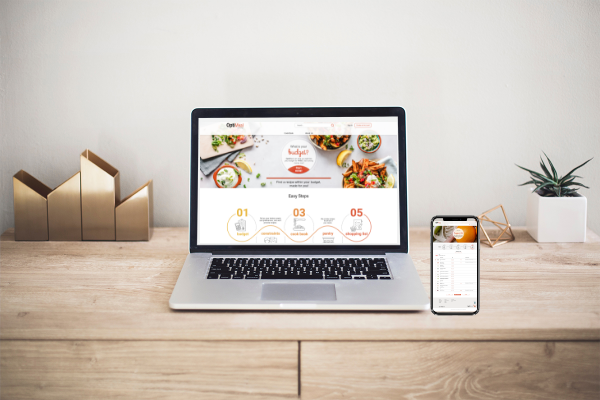
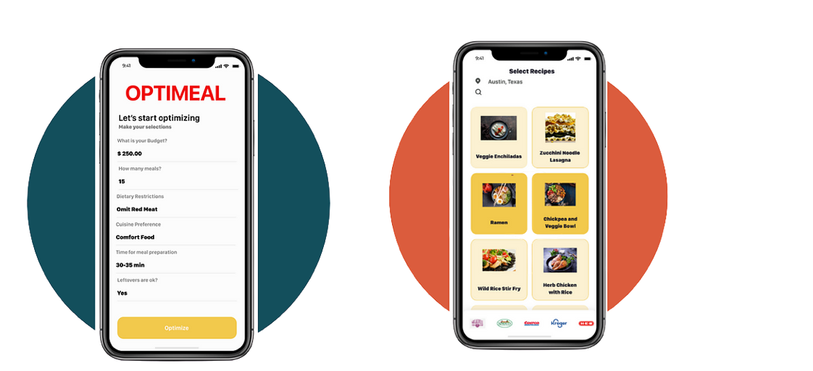
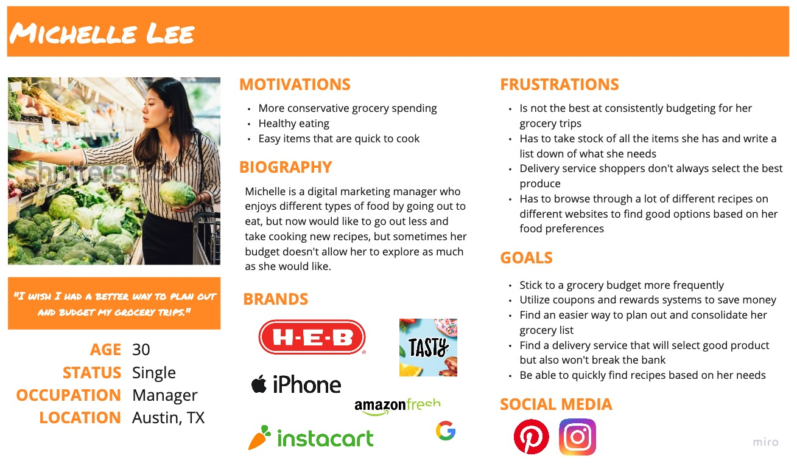
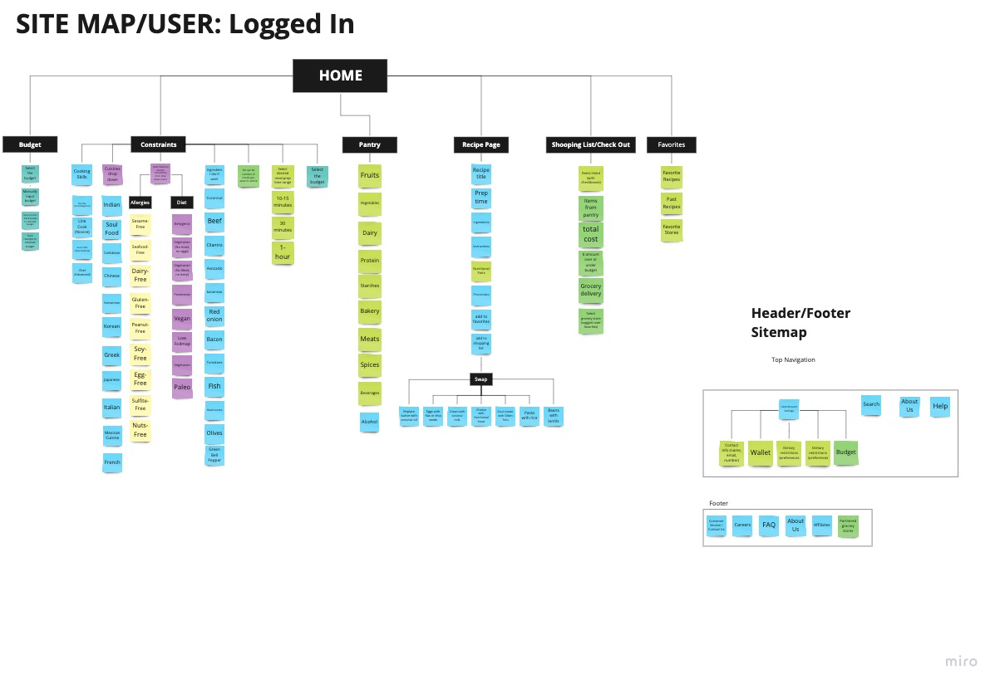

Project Overview
Just about a few months ago Novigi, a creative group of entrepreneurs who are currently obtaining a Master in Technology Commercialization, became interested in the idea of creating new product called OptiMeal to help users to prepare meals within a set budget.
Moreover, our team wanted to identify the pain points that users encounter in grocery shopping, specifically through a website. We would also like to improve the overall grocery shopping experience. Also, identify potential users for new online grocery shopping products; focusing on the users needs and motivations for a satisfactory grocery shopping experience.

The Problem
The team Novigi needs a website for their company OptiMeal. The website will allow users to plan and look for recipes based on their personal budget.
The Solution
Our team worked together with the stakeholder to transform their rough prototype of OptiMeal into a complete responsive web design product. We accomplished this by taking user testing results and applying them to our design process. Considering this is a new product, we wanted to make sure the navigation was very seamless.

Research
Millennials need a proficent way to plan and budget their grocery shopping because they find it complicated to calculate and abide by a budget. Because of their active and busy lifestyle, they need a way to find quick and easy recipes. I wanted to understand more about the experiences of peoples needs when they are grocery shopping for their meals. And, understand how we can provide the best deals with user's local stores and delivery services.

We planned and conducted ten interviews to discover the pain points that people encounter when grocery shopping. We survyed 73 participants, primarily between the ages of 21-40, who are considered frequent grocery shoppers that like to cook.
- 93% of our survey responders were millennials.
- With millennials being digital natives, they are more apt to use tools like online budgeting to help them balance daily responsibilities.
- However, many responses to our survey indicated that while they find these online tools useful, alot of companies that offer products like grocery delivery service are more of a hassle than it is worth.

User Persona

After designating persona types and aligning this with our phasing strategy we were able to priortize who we would be focusing on supporting in the early stages. The app focused on supporting the goals of Michelle Lee, our primary persona. We referred back to our persona throughout the project to guide design decisions, priorities, and create empathy amongst the client and our team.
Visualising the End-to-End
As a team, we created a storyboad to visualise and communicate the users end-to-end experience across various touch-points with the scheme. This allowed us to represent user pain points and see where we needed to focus our attention.

Information Architecture
To understand how users navigated the current OptiMeal app and what needed improvement, we conducted 7 user testing in which the users were asked to complete 5 navigation tasks. As a team, we synthesized each our findings from our interviews and survey responses, and arranged all the data into relevant categories.
.jpg)
We discovered users struggled with maintaining a grocery budget and are often frustrated, and overwhelmed while budgeting with the app current layout. So, we created a complete card sort to reorganize the current site into new categories. By doing so, the user flow helped us map out a new pathway for users, so that every avenue makes sense as we develop the prototype.

Wireframes
Our stakeholder provided our team with a sample mobile prototype of OptiMeal to demonstrate the primary features they required.
We began our design process by creating Lo-fidelity mockups using Adobe Xd and InVision. We created rough sketches to visualize what each team member had in mind for the desktop and mobile website.


Detailed Specs
Before making those iterations and creating a hi-fi prototype, we created a UI style guide. A collaborative effort of how we saw the style for OptiMeal, beginning with the stakeholder's design inspiration photo.
The combination of these two colors work perfectly with our main goals and attributes. Both were tested and passed the accessibility test against the white background.

Testing
Next, we conducted a Lo-fidelity test analysis...